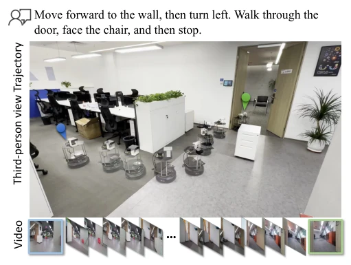
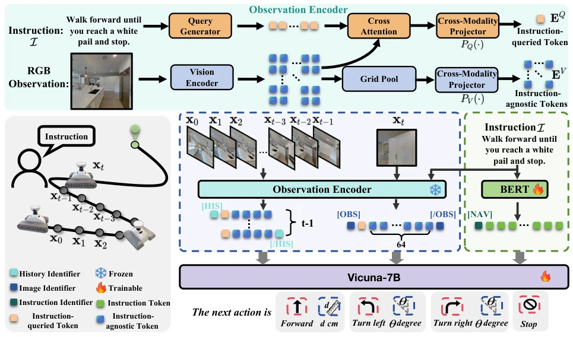
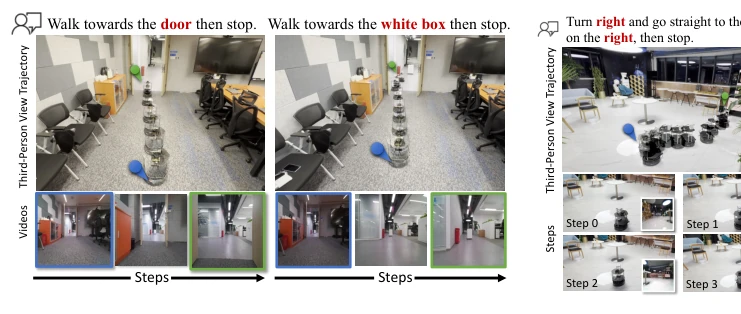
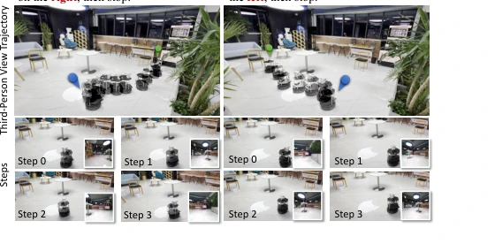
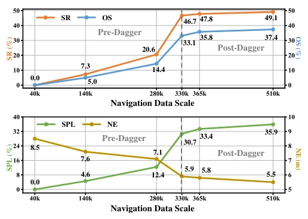
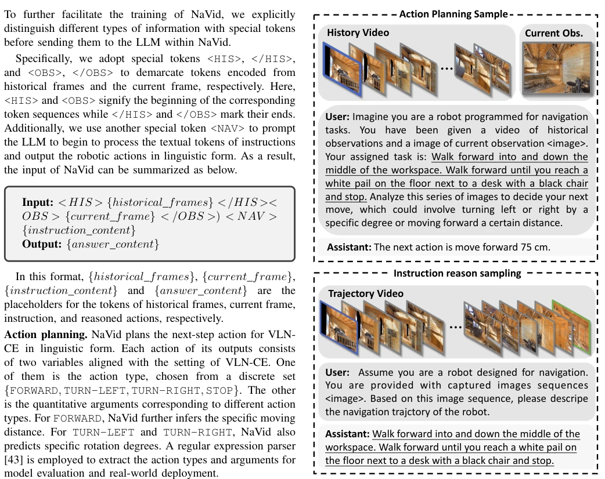
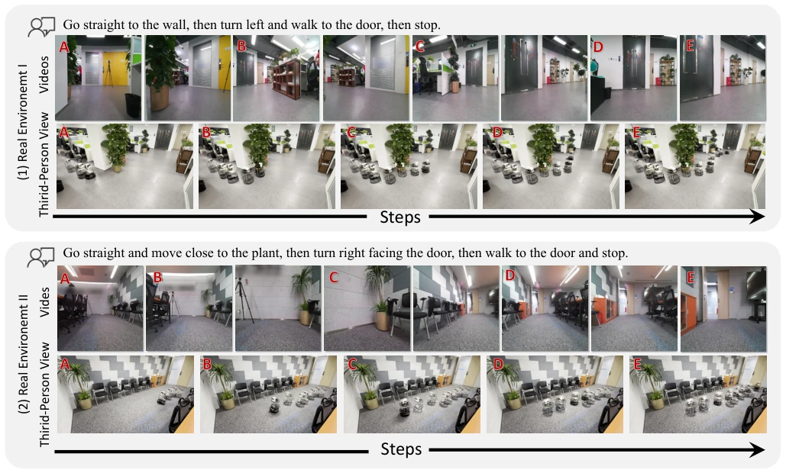
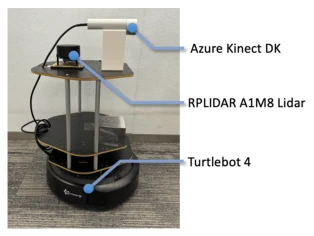
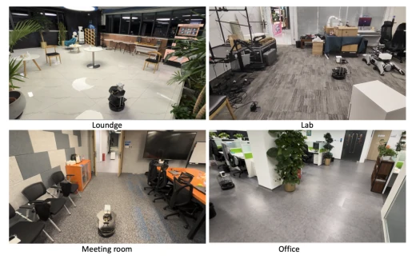

The name NaVid sounds quite like a navigator, and indeed, it has substance. Its biggest selling point is minimalism; it requires only RGB video and instructions, no maps, no odometry, no depth, directly imitating human walking. This counts as a formidable feat in the VLN field, as previously everyone relied on various sensor aids, leading to difficulties in generalization. The experimental results are quite impressive, SOTA in simulation, 66% success rate on real robots, indicating that VLM's generalization ability can indeed bridge the Sim2Real gap. However, do not get too excited too soon; inference speed is 1.5 seconds per step, which if applied to high-speed mobile robots, it would likely crash into a wall before reacting. Moreover, relying entirely on large models like Vicuna-7B, the compute cost is not low, and real-robot deployment depends on hardware capabilities. Overall, the direction is correct, but implementation still needs refinement, especially regarding real-time performance.
The core pain point of VLN has always been generalization, especially the gap from simulation to reality (Sim-to-Real). Existing methods mostly rely on odometry, depth maps, or local maps [16, 45]; these sensors are easily affected by noise or calibration errors in the real world, causing models to fail in unseen scenarios. For example, WS-MGMap [16] uses multi-granularity maps but still relies on additional visual data. End-to-end methods like Seq2Seq [45] perform extremely poorly on RGB, with SR almost 0. Additionally, discrete environment settings (such as R2R) cannot be directly transferred to continuous control. NaVid attempts to solve these problems by leveraging VLM's general knowledge to reduce dependence on specific sensors, but how to ensure long-horizon planning ability under pure visual input remains a challenge. The Sim2Real gap often exceeds 50%, which requires models to possess stronger robustness.

Fig. 1: Real-world demo of our proposed video-based VLM, NaVid, for vision-and-language navigation. Given the human instruction, NaVid only takes online RGB video frames as input and outputs a language action for robotic execution.
NaVid is overall based on the LLaMA-VID architecture, adopting an end-to-end video VLM framework. Input is the RGB sequence of historical video frames and the current frame, plus natural language instructions. The core innovation lies in visual encoding: after each frame extracts features through a Vision Encoder, it is divided into two types of Tokens. One is Instruction-queried Token, extracting features related to instructions through a Query Generator; the second is Instruction-agnostic Token, retaining global geometric information through Grid Pooling, using 64 for current frames and 4 for historical frames to balance efficiency and context. These Tokens are concatenated with text Tokens and sent to Vicuna-7B for inference. Output is actions in language form (e.g., move forward 75 cm), executed through regex parsing. Training adopts a mixed strategy: combining Oracle trajectories and non-Oracle trajectories (similar to Dagger), and adding Instruction Reasoning as an auxiliary task to enhance understanding of the scene and instruction following ability. This design enables the model to better handle the spatiotemporal context of historical trajectories.

Fig. 2: The overview of NaVid. The inputs of NaVid consist of the RGB frames from the online video observation {x0, · · · , xt} along with the human instruction I. For each frame, we use an observation encoder to extract the visual information with the instruction to obtain observation tokens, including, instruction-queried tokens (orange blocks) and instruction-agnostic tokens (blue blocks). At the current step t, the history frames {x0, · · · , xt−1} and the current frame xt are encoded as observation tokens, with 4 and 64 instruction-agnostic tokens for history frames and current frames, respectively. Besides, our method obtains language tokens by a text encoder. Finally, split by the special tokens [HIS], [OBS], and [NAV], we concatenate the observation tokens and language tokens and s
Experiments cover simulation and real robots. Simulation uses VLN-CE R2R and RxR datasets; real robots test 200 instructions in 4 indoor scenes. Baselines include Seq2Seq [45], CMA [45], and WS-MGMap [16]. Metrics include SR, SPL, etc. NaVid achieves SPL of 35.9% on R2R Val-Unseen, surpassing pure visual baselines like RGB-CMA, approaching SOTA using depth maps. Performance is better on cross-dataset RxR, SR 23.8%. In real robot testing, NaVid achieves SR of 92% under simple instructions, 56% under complex instructions, overall about 66%, significantly better than Seq2Seq, etc. Ablation experiments indicate video modeling is superior to text or map modeling. However, inference takes a long time and needs optimization.

Fig. 5: Visual results of our method on forward instructions in real-world environments. From top to bottom are instruc- tions, third-person trajectories, and robot perspective videos.

Fig. 6: Visual results of our method on rotation instruction following in real-world environments. Our method can accu- rately park the robot near a specified target, despite initially being oriented towards a similarly classified object (a chair).

Fig. 8: Performance analysis of our method on the VLN task across different data scales, showing the impact of data volume on SR, OS, SPL, and NE during pre-dagger and post-dagger training phases.
其他图片Other Figures

Fig. 3: Examples of navigation data, comprising the action planning sample (above) and the instruction reasoning sample (below).

Fig. 7: Visual results of our method in a real-world environment. In each real environment example, from top to bottom are instruction, robot perspective video, and third-person view video.

Fig. 10: Real-world robot setup.

Fig. 9: Indoor environments used in real-world experiments.